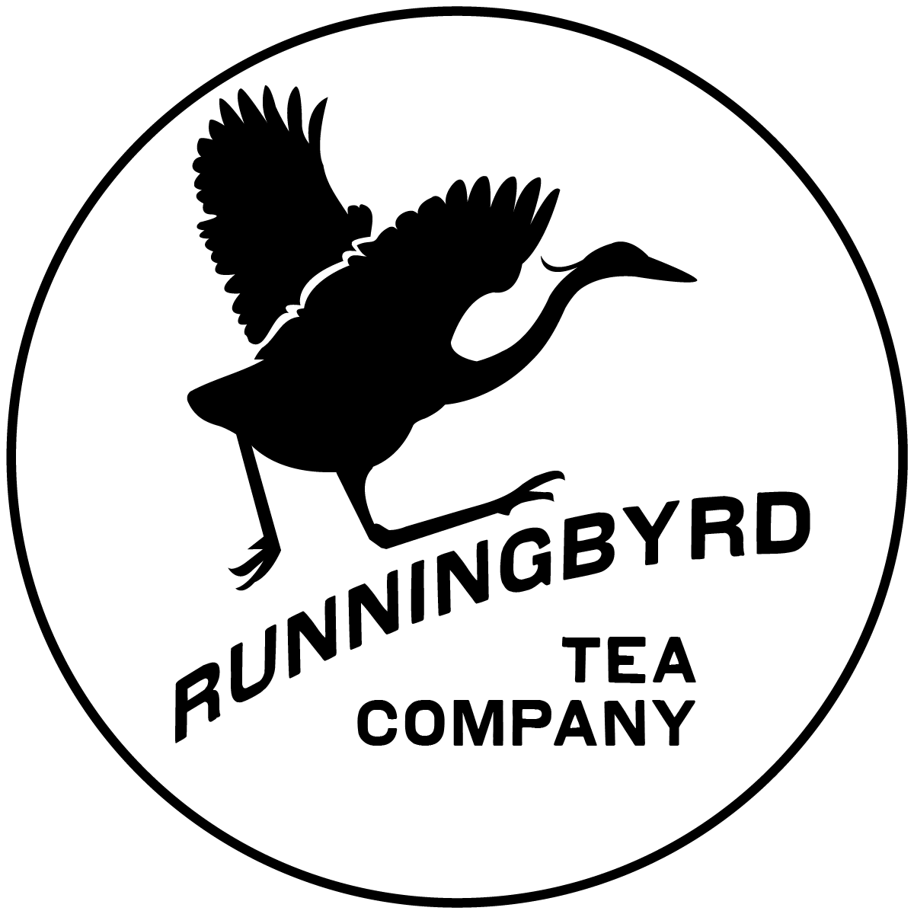

Runningbyrd Tea Company makes full-flavored seasonal teas. Sold in either quart-sized mason jars or 5-gallon party containers, Runningbyrd teas are perfect for enjoying at a picnic, when preparing food from your recent trip to the local market, as a mixer, or as a paired non-alcoholic option in place of wine or craft beer.